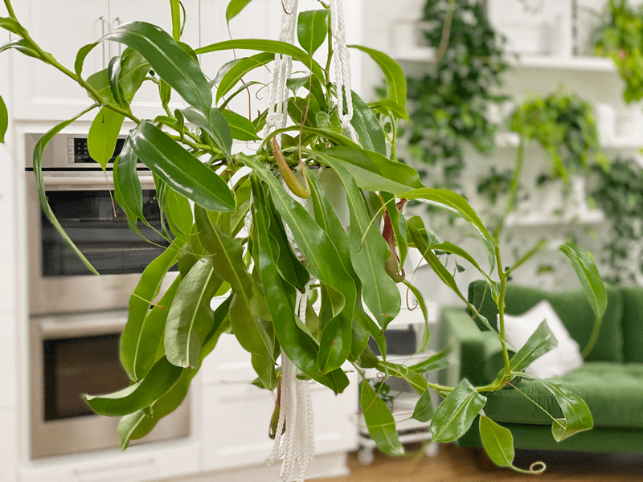
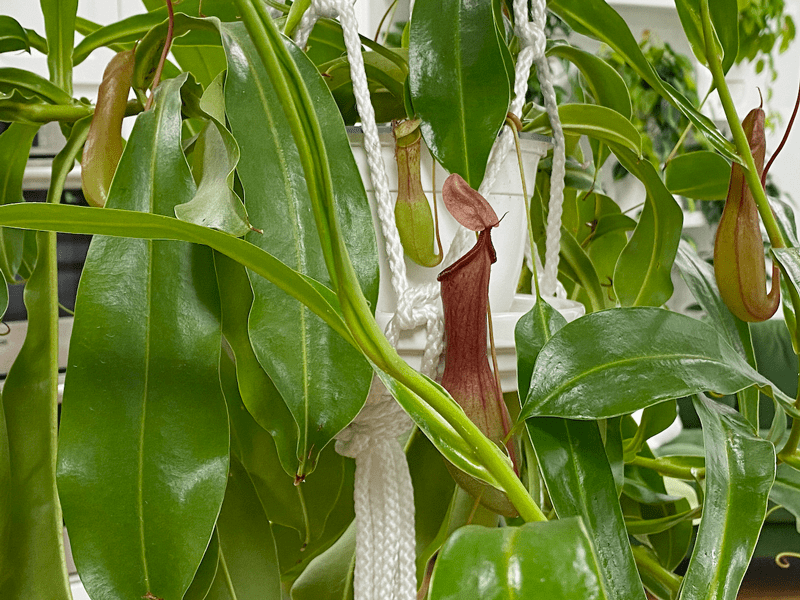
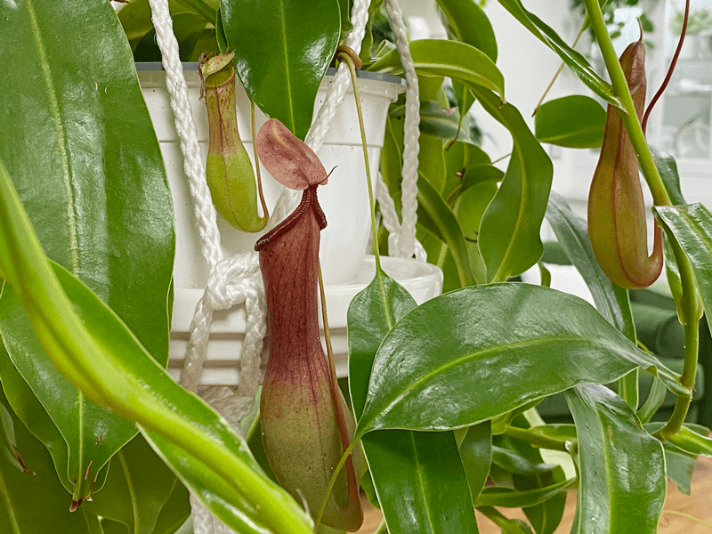
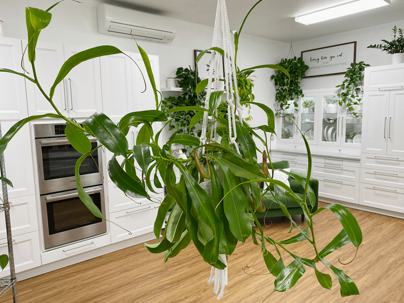

Nepenthes Alata Pitcher Plant | Carnivorous Plant | Care Difficulty – Moderate
This unusual plant is definitely a conversation piece. If you have a fly or gnat problem in your home, this will surely help. Insects are naturally drawn to these plants and are lured into their pitchers, where they become trapped and eventually digested by the plant.

Nepenthes is native to the highlands of Southeast Asia and is found in areas with nutrient-poor soil, which caused the plant to adapt; it digests insects caught in its pitchers to feed itself. Pitcher plants enjoy staying consistently moist, and like bright indirect light. With a little care, they will become a great addition to any space. They are also known as “Monkey Cups” because in their natural habitat, monkeys occasionally drink the fluid in the pitchers.
These plants prefer a hanging pot rather than a tabletop. They like to vine and hang, so giving them ample room makes for a striking appearance. I categorized this plant as moderate care difficulty due to its humidity needs, but otherwise, the plant is easy to care for. You will learn more below about why humidity is key.

Nepenthes are slow growers during their first few years and can take 5 to 10 years to mature. Once established, they will begin to vine and grow rapidly. At this stage, trap stems will loop around and cling to any available support. Right now, ours are wrapping around the macrame string which it is hanging from. Be sure to provide ample support for the plants during this vine-growing stage. Flowers can occur on the tips of the growing vines, and it is recommended to remove them, since they take quite a bit of energy to grow. We have yet to experience any flowers on ours.
Water Requirements
Carnivorous plants require water that is low in minerals; therefore it is best to use distilled, reverse osmosis, or rainwater. Regular municipal tap water, well water, and bottled water will kill most carnivorous plants. Top-water weekly, or whenever the moss starts to dry. Avoid standing water, as this can cause root rot and can make them susceptible to pests. If the pitchers don’t have any water in them, add a small amount (1/2″ of water) in each pitcher. I find that I have to add the water to my indoor pitcher plant, since it isn’t outside to collect rainwater. I use an eyedropper for this.
Light Requirements
All carnivorous plants require bright INDIRECT light. They will not produce carnivorous traps unless they are in bright indirect sun. Nepenthes thrive under grow lights, so keep that in mind as an option.
Quick Facts – Vining
- These plants vine. If you decide to grow them in hanging baskets be aware of the weight of the vines because they can snap fairly easily. So be watchful if you have young ones and/or pets.
- The vines can grow up to 32 feet long!
- Staking them is another option. They don’t grow aerial roots like pothos so you will want to help them but using garden velcro or plant stapes.
Quick Facts – Pitcher Formation
- Each leaf has the potential to grow a pitcher.
- Pitchers are not flowers, they are basically an extension of the leaf and can be thought of as an organ.
- For pitcher formation, you will want humidity of at least 60 percent and you want to make sure the plant is receiving enough bright indirect light. So if your plant isn’t forming pitchers, evaluate the space you have them in to see if it is adequate.
Soil Requirements
Never use commercial potting soils for carnivorous plants. These often contain fertilizers or other minerals and are dangerous for your pitcher plant. Whatever plant media you decide to use, make sure that it is well-drained and open enough, so air reaches the roots. Speaking of roots, if you ever repot your plant, don’t be alarmed by their blackish fine roots. Plant parents aren’t accustomed to such coloring for healthy roots. Also, the best types of containers are plastic or ceramic pots that have drainage holes. The excess water must drip out. When replanting, here are some options:
- A mix of equal parts perlite and long-fibered sphagnum moss.
- Mix equal parts of orchid bark, perlite, and chopped sphagnum moss.
- Use either a mix based on long-fibered sphagnum moss or one based on fertilizer-free sphagnum peat.
- Equal parts perlite, pumice, long-fibered sphagnum moss, and orchid bark.
- A mix of equal parts coconut coir to coconut fiber.
- Equal parts dried sphagnum moss and pumice.
- Equal parts peat moss, part perlite, and silica sand.
Temperature & Humidification Requirements
If you are comfortable in jeans and a t-shirt, your Nepenthes is comfortable. Daytime temperatures should be about 75 degrees (F) and at night it can handle temperatures between 50-70 degrees (F).
Pitcher plants also thrive with humidification, so you either need to place them in a space that has adequate humidity, or you may need to supplement. Our plant has been living for well over a year in our sunroom, which receives light from all 4 walls. This room is the warmest room in the house, which keeps the humidity naturally higher than our other rooms. It’s also important to keep in mind that stagnant air can lead to fungal diseases, so it’s best to have some air movement for most plants. We have a ceiling fan that keeps the air moving around all the plants in this room.
Food | Fertilizer
Bugs are fertilizer for carnivorous plants, and they don’t need much. Plants grown outdoors will catch plenty of prey by themselves. Indoor plants will also catch some. If you’d like to feed your plants, it’s best to feed them bugs (like swatted flies, or freeze-dried mealworms). Bob feeds our plant dead flies that he finds on the windowsills. Indoors, they will attract and capture an occasional fly or another insect. Insects are attracted to this because of nectar secretions found within the cups. The slippery opening and inner walls of the pitcher encourage insects to fall into the digestive fluid at the bottom of the trap. Nutrients are absorbed from this “soup.”
Fertilization is not necessary; however, an occasional, summer application of orchid food, diluted 10%, will benefit growth. Nepenthes respond well to foliar fertilization. Spray twice a month during the growing season with a dilute (10%) orchid fertilizer.

If you would take a moment to really look at the photo above, I’d like to point out a few characteristics of this plant. #1: If you look at all three monkey cups, you will notice that they are at various growth stages. The far-right one hasn’t opened its lid yet. #2: As I have mentioned above, these plants vine in their natural habitat. If you look at the top center of the photo you can see that the tip of the plant has vined out and is wrapped around the plant hanger cord. #3: If you look at the largest monkey cup in the photo, you will see a “shadow” or a darkening in the belly of the monkey cup…that is the water/food line which shows how much stuff is inside of it. Pretty cool stuff, if you ask me!
Plant Characteristics to Watch For
Diagnosing what is going wrong with your plant is going to take a little detective work and even more patience! First of all, don’t panic, and don’t throw out a plant prematurely. Take a few deep breaths and work down the list of possible issues. Below, I am going to share some typical symptoms that can arise. When I start to spot troubling signs on a plant, I take the plant into a room with good lighting, pull out my magnifiers, and begin by thoroughly inspecting the plant.
My pitchers are browning.
- Browning of pitchers is usually a sign of humidity that is too low.
- Solution: This can be remedied by growing in a large clear, vented plastic bag while new pitchers form, and removing the bag once the pitchers are mature.
- Individual pitchers may last anywhere from 1-8 months. Pitchers that are deteriorating due to age will usually brown in their top half first, and they can remain in this half-withered state for several months. They are still beneficial for the plant and should be trimmed off only once they have completely browned.
My plant isn’t producing pitchers.
- If your plant isn’t producing new pitchers, it is usually a sign of humidity that is too low.
- Solution: This can be remedied by growing in a large clear, vented plastic bag while new pitchers form, and removing the bag once the pitchers are mature.
The pitchers are dying.
- If the pitchers remain empty for too long, they will die.
- Solution – Add a little water to the pitchers, about 1/2- 3/4 inch. If there is water in the pitcher, it is also good to remember that pitchers and leaves die naturally as the plant grows. When this happens they should be trimmed off for best culture.
My pitchers don’t have any water in them.
- If the pitchers don’t have any water in them, add a small amount (1/2″ of water) in each pitcher. I find that I have to add the water to my indoor pitcher plant, since it isn’t outside to collect rainwater. I use an eyedropper for this.
My plant is thin and spindly.
- If your plant is thin and spindly or has poor coloration, it can be a sign of weak light exposure.
- Solution: Relocate the plant to space that has more indirect light, but make sure that direct sun rays don’t hit it, as that can burn the foliage.
The leaves have red spots or areas that are dead.
- This can be a sign of sunburn and usually appears on the uppermost growth, facing the sun or light.
- Solution: Relocate the plant or diffuse the incoming light by hanging a sheer in the window.
The leaves are pale in color.
- Leaves might also shrink or lose color if there is a lack of lighting.
- Solution: Relocate the plant so that it receives a better amount of indirect sunlight.
The leaves are floppy.
- Floppy leaves are due to insufficient lighting.
- Solution: Assess the environment and make changes accordingly.

As of today, this plant measures 3 feet wide x 3 feet tall. It currently has 6 monkey cups.
© AmieSue.com